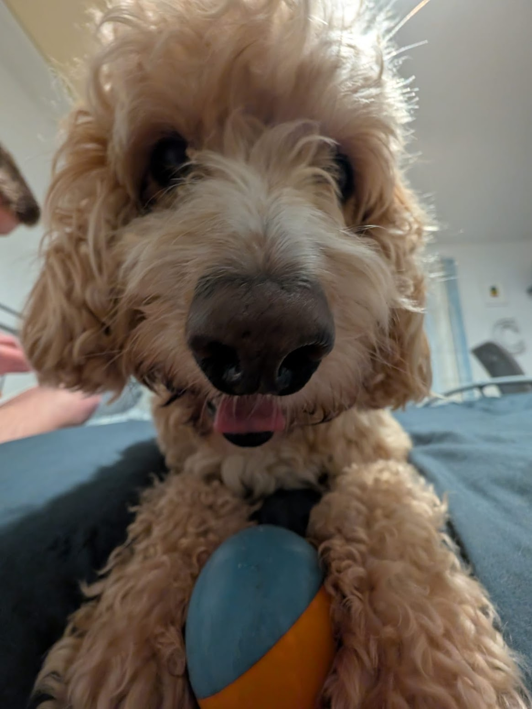

Smudge
Affectionate, acrobatic and adventurous. No 3 words better describe this handful of a hound. With a constant need for stimulation and play, this dog certainly knows how to keep you busy! So if you're in need of a pup that will get you out of the house come rain or shine, Smudge could be your new best friend.